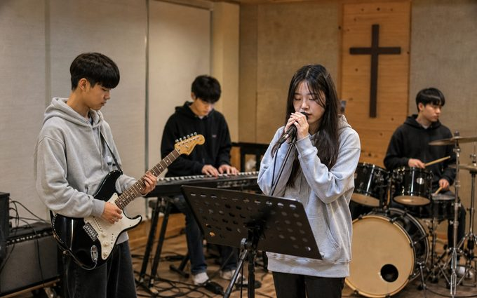

여름 · 하계 캠프
비전컨퍼런스 다음 세대, 무엇을 믿고 어떻게 살 것인가
GV청소년선교회는 겨울 바이블컨퍼런스와 함께 여름에 비전컨퍼런스를 열어 왔습니다. 청소년과 교회학교 지도자가 함께 모여 다음 세대의 진로와 사명을 말씀 앞에서 묻는 2박 3일입니다.
다음 비전컨퍼런스 — 포스터와 일정, 회비, 강사를 준비하고 있습니다. 확정되는 대로 이 페이지에 그대로 올리겠습니다.
- 때 여름 방학 · 2박 3일
- 곳 가평 승동기도원 (지난해 기준)
- 상태 다음 일정·포스터 준비 중

다음 포스터가 이 자리에 걸립니다
포스터 준비 중
비전컨퍼런스 포스터
· 일정 업데이트 예정
다음 비전컨퍼런스 포스터가 도착하면 이 자리에 그대로 걸립니다. 포스터가 나오기 전까지 일정·회비·강사는 이 페이지에 올리지 않습니다.
다음 컨퍼런스 안내
확정된 내용만 채우고, 나머지는 확인 중으로 두었습니다.
- 일정
- 다음 일정 준비 중지난 비전컨퍼런스는 여름 방학 2박 3일로 열렸습니다
- 장소
- 확정 후 안내지난해까지는 가평 승동기도원에서 열렸습니다
- 회비
- 확정 후 안내
- 강사
- 확정 후 안내연사 명단은 포스터와 함께 공지합니다
- 주최
- GV청소년선교회
- 문의
- 02-429-1318담당 전자옥 전도사 010-6491-3683
참가 등록·문의
등록은 교회 단위로 받습니다. 온라인 등록 게시판을 준비하고 있습니다.
※ 등록이 열리기 전까지는 전화·이메일로 참가와 단체 접수를 받습니다. 일정이 확정되면 먼저 등록한 교회부터 안내드립니다.
VISION CONFERENCE
겨울은 말씀으로, 여름은 비전으로
비전컨퍼런스는 여름 방학에 여는 2박 3일 컨퍼런스입니다. 청소년과 교회학교 교사·교육부 지도자가 한자리에서 말씀을 배우고, 다음 세대를 세우는 사명을 함께 나눕니다.
근거 — 크리스천투데이 2025. 6. 23. 「GV청소년선교회 2025 비전컨퍼런스, “다음세대, 교회를 다시 묻다” 주제로」, 아이굿뉴스 2025. 7. 15. 「위기 청소년들 품어주는 박재용 목사」 (두 기사에 같은 일정·장소가 보도되었습니다)
CONFERENCE
다른 컨퍼런스
겨울 바이블컨퍼런스는 제46차 일정과 포스터가 확정되어 안내 중입니다.
CONTACT
다음 비전컨퍼런스 문의를 받습니다
다음 비전컨퍼런스 일정과 참가 접수, 단체 참여 문의를 전화와 이메일로 받습니다. 문의를 남겨 주시면 일정이 확정되는 대로 먼저 안내드립니다.
문의하실 때 알려 주시면 빠릅니다
- 교회·단체 이름과 담당자 연락처
- 참가 예상 인원과 학년
- 희망하는 시기 (여름 방학 중)
- 이동·숙소 관련 문의
문의 전화 02-429-1318 · 담당 전자옥 전도사 010-6491-3683 · aichurchsystem@gmail.com
REGISTRATION
등록 신청
참가 신청은 교회 단위로 접수합니다. 담당 지도자가 우리 교회 정보와 인원을 올리면 담당자 확인을 거쳐 등록 교회 명단에 게시됩니다. 지금은 등록 오픈 준비 중이며, 그 전까지는 전화·이메일로 접수합니다.
교회 등록 신청서
오픈 준비 중비전컨퍼런스 참가 신청서입니다. 등록이 열리면 이 화면에서 바로 보내실 수 있습니다.
※ 지금은 어떤 내용도 전송·저장되지 않습니다. 등록이 열리면 신청 내용은 담당자 확인 후 명단에 게시됩니다.
등록 교회 명단
등록이 열리면 등록한 교회가 이곳에 차례로 표시됩니다.
| 번호 | 교회 | 담당자 | 인원 | 접수일 | 상태 |
|---|
등록된 교회가 없습니다
등록 오픈 준비 중입니다. 등록이 열리면 이 자리에 접수한 교회가 차례로 게시됩니다.
※ 명단에는 교회명·담당자·인원·접수일·상태만 표시합니다. 연락처와 이메일은 담당자 확인용으로만 쓰고 공개하지 않습니다.
우리 교회 등록 확인·수정
등록할 때 받은 접수 번호와 담당자 연락처로 우리 교회 등록 내용을 확인하고 수정할 수 있습니다.
※ 확인·수정 화면은 등록 오픈과 함께 열립니다.
- 01등록 신청담당 지도자가 교회 정보와 인원을 올립니다.
- 02담당자 확인접수 내용을 확인하고 연락드립니다.
- 03명단 게시확인된 교회가 이 페이지 명단에 표시됩니다.